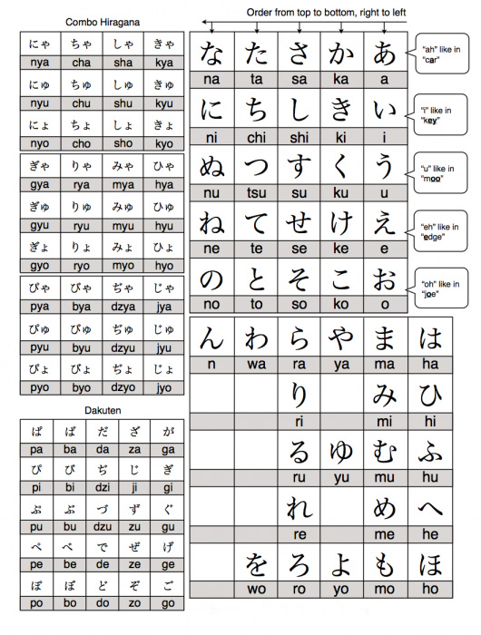
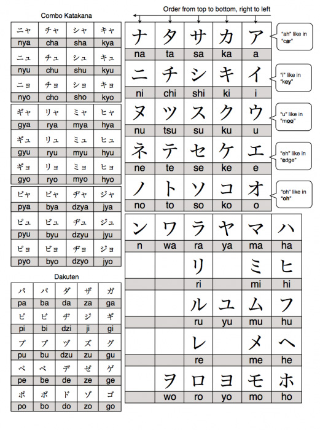

About Kanji, Hiragana, Katakana, and Romaji
Kanji (漢字) are the adopted logographic Chinese characters that are used in the Japanese writing system. They are used alongside the Japanese syllabic scripts hiragana and katakana. The Japanese term kanji for the Chinese characters literally means "Han characters". It is written with the same characters as in Traditional Chinese to refer to the character writing system, hanzi (漢字).
- most nouns, such as 川 (kawa, "river") and 学校 (gakkō, "school")
- the stems of most verbs and adjectives, such as 見 in 見る (mi-ru, "see") and 白 in 白い (shiro-i, "white")
- the stems of many adverbs, such as 速 in 速く (haya-ku, "quickly") and 上手 as in 上手に (jōzu-ni, "masterfully")
- most Japanese personal names and place names, such as 田中 (Tanaka) and 東京 (Tōkyō). (Certain names may be written in hiragana or katakana, or some combination of these and kanji.)
Some Japanese words are written with different kanji depending on the specific usage of the word—for instance, the word naosu (to fix, or to cure) is written 治す when it refers to curing a person, and 直す when it refers to fixing an object. Most kanji have more than one possible pronunciation (or "reading"), and some common kanji have many. Unusual or nonstandard readings may be glossed using furigana. Kanji compounds are sometimes given arbitrary readings for stylistic purposes. For example, in Natsume Sōseki's short story The Fifth Night, the author uses 接続って for tsunagatte, the gerundive -te form of the verb tsunagaru ("to connect"), which would usually be written as 繋がって or つながって. The word 接続, meaning "connection", is normally pronounced setsuzoku. There are even kanji terms that have pronunciations that correspond with neither the on'yomi nor the kun'yomi readings (see kanji) of the individual kanji within the term, such as 明日 (ashita, "tomorrow") and 大人 (otona, "adult").
Example:
- 京都 = Kyouto
- 唯一無二 = one and only; unique
- 安全 = safety, security
- 暗闇 = darkness, the dark
- 降参 = surrender
Hiragana (平仮名) is a Japanese syllabary, one component of the Japanese writing system, along with katakana, kanji and in some cases rōmaji (Latin script). It is a phonetic lettering system. The word hiragana literally means "ordinary" or "simple" kana ("simple" originally as contrasted with kanji).
Hiragana and katakana are both kana systems. With one or two minor exceptions, each syllable in the Japanese language (strictly, each mora) is represented by one character (or one digraph) in each system. This may be either a vowel such as "a" (hiragana あ); a consonant followed by a vowel such as "ka" (か) or "n" (ん), a nasal sonorant which, depending on the context, sounds either like English m, n or ng ([ŋ]) when syllable-final or like the nasal vowels of French, Portuguese or Galician. Because the characters of the kana do not represent single consonants (except in the case of ん "n"), the kana are referred to as syllabic symbols and not alphabetic letters.
Hiragana is used to write okurigana (kana suffixes following a kanji root, for example to inflect verbs and adjectives), various grammatical and function words including particles, as well as miscellaneous other native words for which there are no kanji or whose kanji form is obscure or too formal for the writing purpose. Words that do have common kanji renditions may also sometimes be written instead in hiragana, according to an individual author's preference, for example to impart an informal feel. Hiragana is also used to write furigana, a reading aid that shows the pronunciation of kanji characters.
There are two main systems of ordering hiragana: the old-fashioned iroha ordering and the more prevalent gojūon ordering.
Hiragana (平仮名) are used to write the following:
- okurigana (送り仮名)—inflectional endings for adjectives and verbs—such as る in 見る (miru, "see") and い in 白い (shiroi, "white"見た (mita, "saw") and 白かった (shirokatta, "was white").
- various function words, including most grammatical particles, or postpositions (joshi (助詞))—small, usually common words that, for example, mark sentence topics, subjects and objects or have a purpose similar to English prepositions such as "in", "to", "from", "by" and "for".
- miscellaneous other words of various grammatical types that lack a kanji rendition, or whose kanji is obscure, difficult to typeset, or considered too difficult to understand (as in children's books).
- furigana (振り仮名)—phonetic renderings of kanji placed above or beside the kanji character. Furigana may aid children or non-native speakers or clarify nonstandard, rare, or ambiguous readings, especially for words that use kanji not part of the jōyō kanji list.
There is also some flexibility for words with more common "kanji" renditions to be instead written in hiragana, depending on the individual author's preference (all Japanese words can be spelled out entirely in hiragana or katakana, even when they are normally written using kanji). Some words are colloquially written in hiragana and writing them in kanji might give them a more formal tone, while hiragana may impart a softer or more emotional feeling. For example, the Japanese word "kawaii", the Japanese equivalent of "cute", can be written entirely in hiragana as in かわいい, or as the kanji term 可愛い. Some lexical items that are normally written using kanji have become grammaticalized in certain contexts, where they are instead written in hiragana. For example, the root of the verb 見る (miru, "see") is normally written with the kanji 見. However, when used as a suffix meaning "try out", the whole verb is typically written in hiragana as みる, as in 食べてみる (tabetemiru, "try eating [it] and see").
Example:
- かのじょ (Kanojo) = She
- こいびと (Koibito) = Lover
- みち (Michi) = Street
- どくしん (Dokushin) = Single
- かわいい (Kawaii) = Cute
Katakana (片仮名、カタカナ) is a Japanese syllabary, one component of the Japanese writing system along with hiragana, kanji and in some cases the Latin script (known as rōmaji). The word katakana means "fragmentary kana", as the katakana characters are derived from components or fragments of more complex kanji. Katakana and hiragana are both kana systems. With one or two minor exceptions, each syllable (strictly mora) in the Japanese language is represented by one character or kana, in each system. Each kana represents either a vowel such as "a" (katakana ア); a consonant followed by a vowel such as "ka" (katakana カ) or "n" (katakana ン), a nasal sonorant which, depending on the context, sounds either like English m, n or ng ([ŋ]) or like the nasal vowels of Portuguese or Galician.
In contrast to the hiragana syllabary, which is used for Japanese words not covered by kanji and for grammatical inflections, the katakana syllabary usage is quite similar to italics in English; specifically, it is used for transcription of foreign-language words into Japanese and the writing of loan words (collectively gairaigo); for emphasis; to represent onomatopoeia; for technical and scientific terms; and for names of plants, animals, minerals and often Japanese companies.
Katakana are characterized by short, straight strokes and sharp corners. There are two main systems of ordering katakana: the old-fashioned iroha ordering and the more prevalent gojūon ordering.
Katakana (片仮名) are used to write the following:
- transliteration of foreign words and names, such as コンピュータ (konpyūta, "computer") and ロンドン (Rondon, "London"). However, some foreign borrowings that have become naturalized may be rendered in hiragana, such as たばこ (tabako, "tobacco"). See also Transcription into Japanese.
- commonly used names of animals and plants, such as トカゲ (tokage, "lizard") and バラ (bara, "rose"), and certain other technical and scientific terms, such as mineral names
- occasionally, the names of miscellaneous other objects whose kanji are rare, such as ローソク (rōsoku, "candle")
- onomatopoeia, such as ワンワン (wan-wan, "woof-woof"), and other sound symbolism
- emphasis, much like italicisation in European languages.
Katakana can also be used to impart the idea that words are spoken in a foreign or otherwise unusual accent; for example, the speech of a robot.
Example:
- ツアー (Tsuaa) = Tour
- アルバイト (Arubaito) = Part-Time Job
- トイレ (Toire) = Toilet
- テレビ (Terebi) = Television
- ドラマ (Dorama) = Drama
The romanization of Japanese is the use of Latin script to write the Japanese language. This method of writing is sometimes referred to in Japanese as rōmaji (ローマ字, literally, "Roman letters"). There are several different romanization systems. The three main ones are Hepburn romanization, Kunrei-shiki romanization (ISO 3602), and Nihon-shiki romanization (ISO 3602 Strict). Variants of the Hepburn system are the most widely used.
Japanese is normally written in a combination of logographic characters borrowed from Chinese (kanji) and syllabic scripts (kana) that also ultimately derive from Chinese characters. Rōmaji may be used in any context where Japanese text is targeted at non-Japanese speakers who cannot read kanji or kana, such as for names on street signs and passports, and in dictionaries and textbooks for foreign learners of the language. It is also used to transliterate Japanese terms in text written in English (or other languages that use the Latin script) on topics related to Japan, such as linguistics, literature, history, and culture. Rōmaji is the most common way to input Japanese into word processors and computers, and may also be used to display Japanese on devices that do not support the display of Japanese characters.
All Japanese who have attended elementary school since World War II have been taught to read and write romanized Japanese. Therefore, almost all Japanese are able to read and write Japanese using rōmaji, although it is extremely rare in Japan to use this method to write Japanese (except as an input tool on a computer or for special purposes like in some logo design), and most Japanese are more comfortable reading kanji and kana.
The Latin alphabet is used to write the following:
- Latin-alphabet acronyms and initialisms, such as NATO or UFO
- Japanese personal names, corporate brands, and other words intended for international use (for example, on business cards, in passports, etc.)
- foreign names, words, and phrases, often in scholarly contexts
- foreign words deliberately rendered to impart a foreign flavour, for instance, in commercial contexts
- other Japanized words derived or originated from foreign languages, such as Jリーグ (jei rīgu, "J. League"), Tシャツ (tī shatsu, "T-shirt") or B級グルメ (bī-kyū gurume, "B-rank gourmet [cheap and local cuisines]")
Example:
- Himitsu = Secret
- Aisuru Hito = The Loved One
- Kodokuna Yoru = The Lonely Night
- Yume Wo Shinjiru = Believe In Dreams
- Dokoka De = In Somewhere